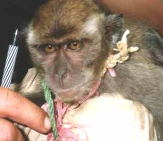

Op weg naar de waterval kwamen we langs de rivier een zeer primitieve stam tegen. De gevangen aap wordt van zijn vacht ontdaan. |
|
We waren nog geen uur op weg de jungle in en één van de jagers schoot zó een aap uit de boom (op deze plek). Deze werd 's avonds geroosterd. |
De jagers, met wie we in de jungle waren, hadden een wild zwijn geschoten (hier). |
We kregen deze vis die enkele uren geleden gevangen en doodgeknuppeld was. Op deze lokatie lieten we ons in de jungle droppen. |
|  |
Alhoewel een aap als huisdier soms vertroeteld wordt, kan hij ook gepest worden door kinderen. |
In Nibung: deze man is erg lief voor zijn aapje. Haren die te lang zijn knipt hij er zorgvuldig af. |